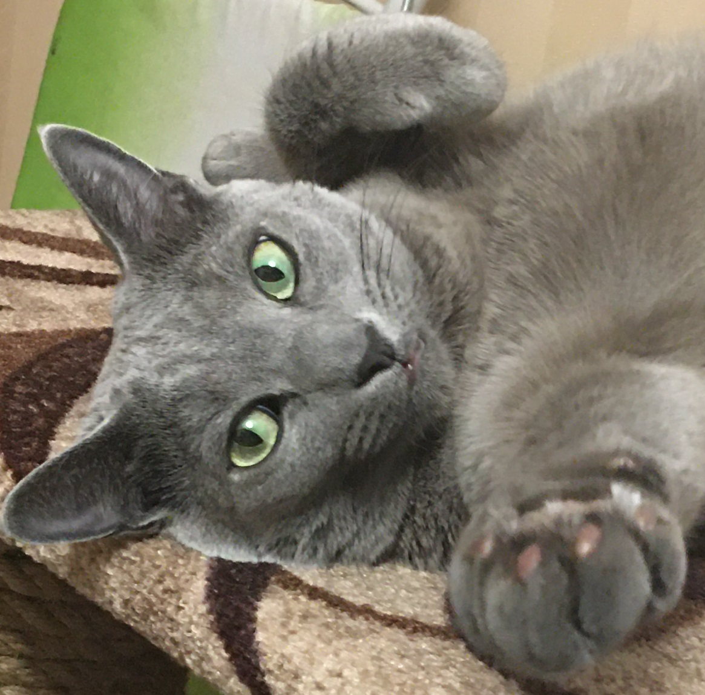

Приветсвую тебя, кожаный друг!
Давай знакомится =)

Меня зовут:
- Елизар (по паспорту)
- Лакки
- Серый
- Сосиска
Получить больше информации о моей породе, можно в Википедии.
Что нужно знать о нас:
- Отличительная наша черта – безрассудная любовь к прыжкам в высоту, поэтому в комнате, где мы обитаем, вазы и другие хрупкие предметы лучше не держать.
- Мы крайне чистоплотны, поэтому несвоевременно вынесенный или плохо вымытый лоток воспринимаем как личное оскорбление.
- Наша порода осторожна и чрезвычайно застенчива. При появлении в доме незнакомца стараемся отойти подальше либо спрятаться.
- Мы довольно самостоятельны. При отсутствии должного внимания со стороны хозяина способны развлечь себя сами.
- Отличаемся крепким здоровьем. При правильном уходе можем дожить до 20 лет и более. В истории зафиксированы случаи, когда мои сородичи успевали встретить собственное 25-летие.
- Плохо переносим внутрисемейные конфликты. Частые ссоры домочадцев способны превратить нас в нервное, запуганное и неадекватное существо.
Теперь ты знаешь больше о плюшевых аристократах ;-)
До встречи, мой кожаный друг!